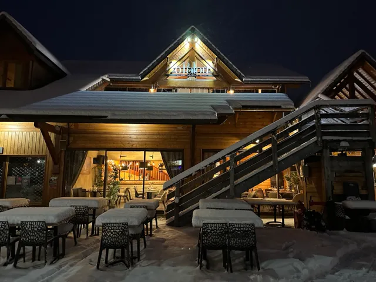
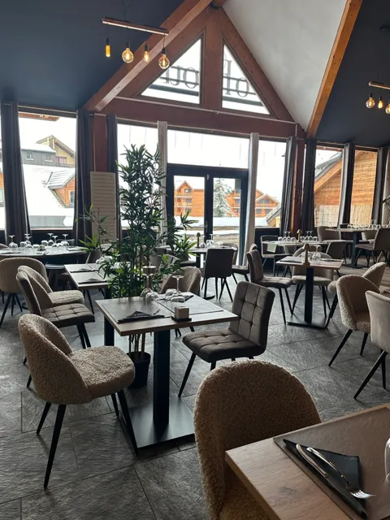
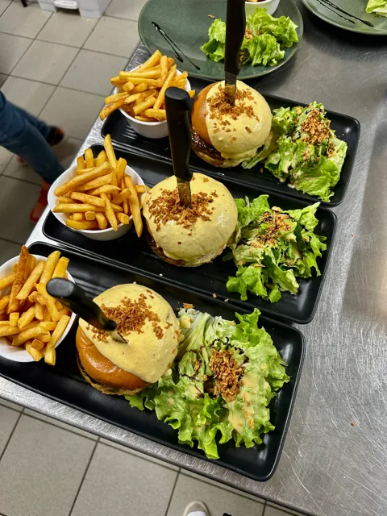
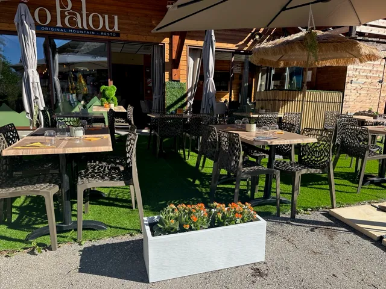
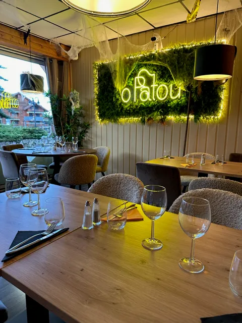

🥬
Salades
& plats légers
Une option fraîche avant de reprendre les sentiers ou les pistes.

Restaurant de montagne · La Joue du Loup
Une grande table familiale, des saveurs alpines et 110 places pour accueillir les tribus.
Entrer ↓Bienvenue chez O Patou
Au cœur de la station, la famille reçoit les habitués, les vacanciers et les groupes dans un chalet chaleureux ouvert hiver comme été.
Découvrir l’offre ↘
couverts
pour accueillir
petites et grandes tablées
La carte
La sélection exacte et les tarifs restent à confirmer directement auprès du restaurant. Les familles de plats ci-dessous proviennent de la fiche officielle.
Une option fraîche avant de reprendre les sentiers ou les pistes.
Des saveurs alpines et une cuisine généreuse, servies au chalet.

03Une carte variée et équilibrée pour recevoir toute la tablée.
Carte complète et allergènes : renseignements au restaurant.

Terrasse au soleil lorsque le Dévoluy s’ouvre, salle douce et lumineuse quand la neige revient.

L’ambiance
À table
7 jours sur 7
11:00 — 14:00
18:00 — 21:30